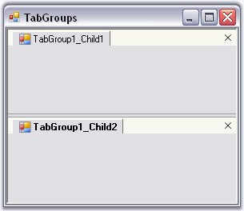

The below given steps will guide you to create and control tab groups.
· To the application add Tools.Windows and Shared.Base Syncfusion assemblies.
· Add 2 more forms and rename them as TabGroup1_Form and TabGroup2_Form. (The application now contains three forms (i.e.) Form1, TabGroup1_Form and TabGroup2_Form).
· In Form1, add the namespace Syncfusion.Windows.Forms.Tools.
|
[C#]
Using Syncfusion.Windows.Forms.Tools; |
|
[VB.NET]
Imports Syncfusion.Windows.Forms.Tools |
· Declare the TabbedMDIManager in your form.
|
[C#]
Private TabbedGroupedMDIManager tabbedMDIManager; |
|
[VB.NET]
Private TabbedGroupedMDIManager As TabbedMDIManager |
· Set the form's IsMdiContainer property to True.
· Initialize the TabbedMDIManager and set the required properties.
|
[C#]
public Form1() { InitializeComponent(); // Initialize a TabbedGroupedMDIManager. this.tabbedMDIManager = new TabbedGroupedMDIManager(); // Indicates whether the user can drag and drop tabs(child forms) from one tab group to another. this.tabbedMDIManager.AllowTabGroupCustomizing = false; // Align TabGroup horizontally. this.tabbedMDIManager.Horizontal = true; } |
|
[VB.NET]
Public Sub New() InitializeComponent() ' Initialize a TabbedGroupedMDIManager. Me.tabbedMDIManager = New TabbedGroupedMDIManager() ' Indicates whether the user can drag and drop tabs(child forms) from one tab group to another. Me.tabbedMDIManager.AllowTabGroupCustomizing = False ' Align TabGroup horizontally. Me.tabbedMDIManager.Horizontal = True End Sub |
· Attach the TabbedMDIManager to your form and specify the Tab Groups.
|
[C#]
private void Form1_Load(object sender, System.EventArgs e) { this.tabbedMDIManager.AttachToMdiContainer(this); // Specify the tab groups. this.tabbedMDIManager.TabbedGroups.Add(new TabbedGroup("TabGroup1")); this.tabbedMDIManager.TabbedGroups.Add(new TabbedGroup("TabGroup2")); } |
|
[VB.NET]
Private Sub Form1_Load(ByVal sender As Object, ByVal e As System.EventArgs) Handles MyBase.Load Me.tabbedMDIManager.AttachToMdiContainer(Me) ' Specify the tab groups. Me.tabbedMDIManager.TabbedGroups.Add(New TabbedGroup("TabGroup1")) Me.tabbedMDIManager.TabbedGroups.Add(New TabbedGroup("TabGroup2")) End Sub |
· Add 2 bar items (or buttons can also be used) to add the tab groups. In the barItem_click event, add the below given code.
|
[C#]
// Adding tab group 1 forms by clicking on a barItem. private void barItem1_Click(object sender, System.EventArgs e) { TabGroup1_Form form = new TabGroup1_Form (); form.Text = "TabGroup1_Child1"; // Add the TabGroup1_Form to a specific group. this.tabbedMDIManager.TabbedGroups["TabGroup1"].AddForm(form); } // Adding tab group 2 forms by clicking on another barItem. private void barItem2_Click(object sender, System.EventArgs e) { TabGroup2_Form form = new TabGroup2_Form (); form.Text = "TabGroup2_Child2"; // Add the TabGroup2_Form to a specific group. this.tabbedMDIManager.TabbedGroups["TabGroup2"].AddForm(form); } |
|
[VB.NET]
' Adding tab group 1 forms by clicking on a barItem. Private Sub barItem1_Click(ByVal sender As Object, ByVal e As System.EventArgs) Handles barItem1.Click Dim form As TabGroup1_Form = New TabGroup1_Form Form.Text = "TabGroup1_Child1" ' Add the TabGroup1_Form to a specific group. Me.tabbedMDIManager.TabbedGroups("TabGroup1").AddForm(Form) End Sub ' Adding tab group 2 forms by clicking on another barItem. Private Sub barItem2_Click(ByVal sender As Object, ByVal e As System.EventArgs) Handles barItem2.Click Dim form As TabGroup2_Form = New TabGroup2_Form Form.Text = "TabGroup2_Child2" ' Add the TabGroup2_Form to a specific group. Me.tabbedMDIManager.TabbedGroups("TabGroup2").AddForm(Form) End Sub |

Figure 1092: Form with TabGroups
The AllowTabGroupCustomizing property indicates whether the user can drag and drop tabs (child forms) from one tab group to another.
The below methods can be used for specific functionalities in TabGroups.
|
Methods |
Description |
|
MakeSingleTabGroup |
Consolidates the child forms in different tab groups into a single tab group. |
|
MaximizeTabGroup |
This method is called to make the tab group host specified in the Syncfusion.Windows.Forms.Tools.TabHost occupy the maximum space. |
|
MoveActiveDocTo |
Moves the active form to the specified tab group. |
|
MoveDocTo |
Moves the child form to the specified tab group. |
|
CreateNewHorizontalGroup |
Creates a new horizontal tab group, moving the active child form to that group. |
|
CreateNewVerticalGroup |
Creates a new vertical tab group, moving the active child form to that group. |